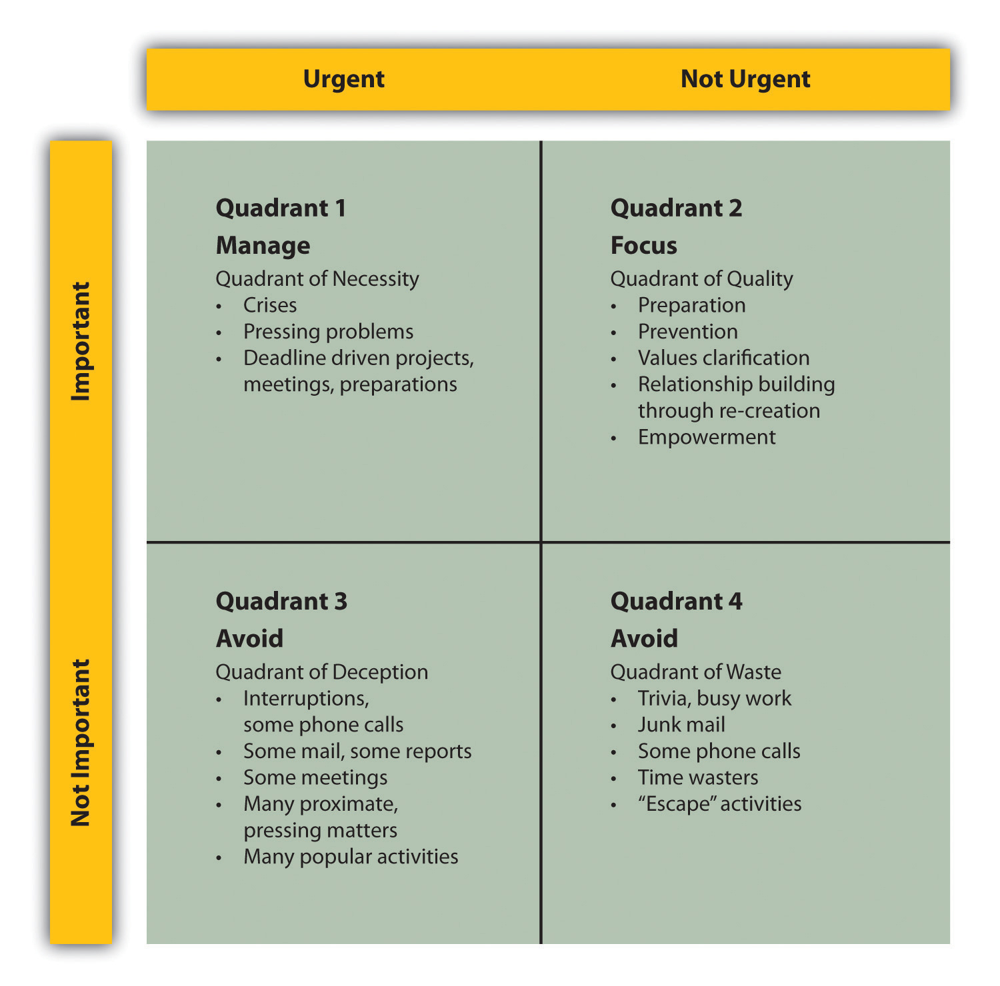
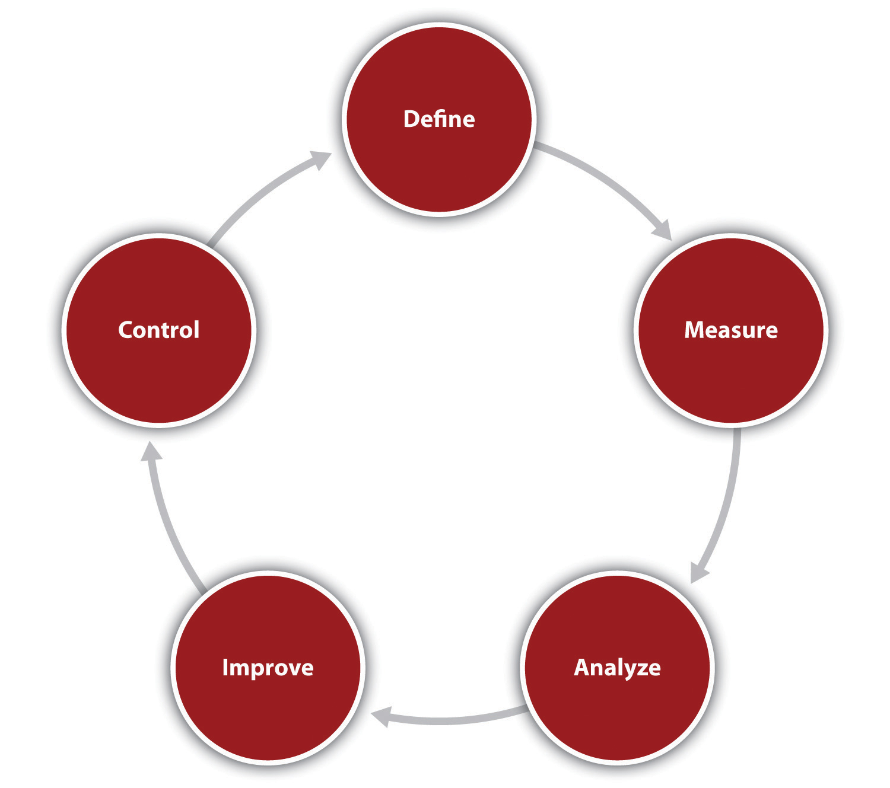

Source: Used with permission from Carrot Creative.
The small in small business refers only to the number of employees or the volume of sales. It seldom refers to the level of enthusiasm, the amount of creativity, or the ability to innovate. A great example of this is Carrot Creative, a new social media agency headquartered in the Dumbo section of Brooklyn, New York. Mike Germano and Robert Gaafar started their first company while Mike was a college student and serving as a city councilman in Hamden, Connecticut. They developed sites that enabled students to sell used textbooks and rate their professors. In 2005, they opened Carrot Creative. When it was in its infancy, Carrot Creative was not a traditional marketing agency, and social media barely existed. The social media industry, as a whole, is one of the most innovative and fast-paced industries in the world, forcing companies such as Carrot Creative to stay ahead of the curve and adapt quickly.
From the very beginning, Carrot Creative has been innovative and progressive—not only because of its founders and team members but also out of necessity. It started with no available business model to copy, no rules to follow, and no resources on which to rely. They had one rule: do not accept the status quo. Carrot Creative was designed to become what its founders envisioned and what the market needed. They view themselves as a business that is always open to a challenge. They dare anyone to present them with a problem that they cannot solve. Germano, in a recent interview, put it this way, “We help brands build on social networks, teach them and help them in great ways for them to have conversations with their customers and really turn brands into people.”Julie Kanfer, “Brooklyn Tech: Carrot Creative’s Mike Germano,” Brooklyn Heights Blog, May 14, 2010, accessed February 4, 2012, brooklynheightsblog.com/archives/18448.
Some of the brands that they have signed include Crayola, the National Football League, Major League Baseball, AOL, Disney, PepsiCo, Budweiser, the Islands of the Bahamas, and Ford Motor Company. Creative Carrot was the driving force behind Ford’s social media campaign for its new Fiesta vehicle. This small business has partnerships with some of the world’s largest advertising agencies and public relations (PR) firms. They also have the honor to be on the forefront of designing the very tools that define social media. They view their title as an official “Facebook Preferred Developer” as just icing on the cake.
Today, Carrot Creative remains on top of the creative game by giving all its employees the freedom to create in their own way. It keeps creativity flowing by cultivating an environment and culture that removes the idea of micromanaging and gives each Carrot Creative employee the freedom, trust, and responsibility for their own work and actions. One never knows when creativity will strike, but it certainly will not be inside a cubicle or under someone’s thumb. Creativity flows through individual expression and personal work style. The Carrot Creative office is designed for just those things. There is space to work on couches, in a room of Astroturf, and private offices with maple desks, and, most importantly, the ability to be freely collaborative. As Germano said, “We appreciate the individual nature of small companies.”Julie Kanfer, “Brooklyn Tech: Carrot Creative’s Mike Germano,” Brooklyn Heights Blog, May 14, 2010, accessed February 4, 2012, brooklynheightsblog.com/archives/18448.
Open any basic management textbook, and there will always be a discussion of the importance for an organization to be both effectiveAchieving the outcomes that someone wishes to produce. and efficientProducing the desired results with the minimum expenditure of energy, time, money, personnel, or material.. These are fundamental concepts. An organization demonstrates effectiveness when it achieves the outcomes that it wishes to produce.Amitai Etzioni, Modern Organizations (Englewood Cliffs, NJ: Prentice Hall, 1964), 17. Efficiency is “the capacity of an organization, institution or business to produce the desired results with the minimum expenditure of energy, time, money, personnel, material, etc.”“Efficiency, Organizational,” Mondofacto, December 12, 1998, accessed February 4, 2012, www.mondofacto.com/facts/dictionary?efficiency%2C+organizational. In discussing the distinction between the two concepts, Peter Drucker once said, “Efficiency is doing things right; effectiveness is doing the right things.”“Peter Drucker Quotes,” Brainy Quote, accessed February 4, 2012, www.brainyquote.com/quotes/authors/p/peter_drucker.html. Regardless of the exact definition of these concepts, it should be clear that any business should strive to be both effective and efficient.
It is important to recognize that for any given endeavor, one can be effective and but not efficient and vice versa. This can be illustrated with the following example. Two students are working in their college mail room. Each is given a stack of five hundred individual class schedules that are to be sorted and placed in the mailboxes of the undergraduate students. They are told that when they are done, they will be given another job. The first student is meticulous and carefully checks that each class schedule goes to the right recipient. She completes the job in 4.5 hours. The second student is less careful about accuracy and makes several errors by putting the wrong schedule in the wrong box. However, he completes his work in 3 hours. The first student was effective because the task was to get the right schedule to the right student. The second student was more efficient, if efficiency is measured in the number of schedules dispensed per hour.
In the late 1950s and early 1960s, two important works on the nature of a firm introduced an expanded concept known as “organizational slack.”James G. March and Herbert A. Simon, Organizations (New York: John Wiley & Sons, 1958), 46; Richard M. Cyert and James G. March, A Behavioral Theory of the Firm (Oxford, UK: Blackwell, 1963), 121. Slack was seen as the excess capacity maintained by an organization. By definition, slack implies that an organization is not perfectly efficient. Some argue that slack provides resources for innovation and change. Others see it as a buffer for a firm.Joseph L. C. Cheng and Idalene F. Kesner, “Organizational Slack and Response to Environmental Shifts: The Impact of Resource Allocation Patterns,” Journal of Management 23, no. 1 (1997): 1–18. Although these debates might make for interesting academic discussions, it must be recognized that most small businesses do not have the luxury of maintaining any appreciable slack. Their survival hinges on being both highly effective and highly efficient. Therefore, any technique, program, or methodology that improves those ends is vital to the well-being of a small business.
Strategy is the art of making use of time and space. I am less concerned about the latter than the former. Space we can recover, lost time never.“Napoleon Speaks on Increasing Market Share,” Stealing Share, Inc., accessed June 1, 2012, http://www.stealingshare.com/pages/Napoleon%20Strategy%20works.htm.
Napoleon
Throughout this chapter, the focus will be on the simple fact that one of the great enemies in life—particularly a businessperson’s life—is the existence and acceptance of waste. One of the resources that we can least afford to waste is time. In many ways, time is the most precious of all resources. Other resources can often be purchased or acquired, but time cannot be purchased. Once lost, time can never be recaptured. Time, as a resource, should be of particular importance for the small business owner.
If one is serious about maximizing the use of time, then one should consider two venues: use a time-management system and avoid what are referred to as “time wasters.” The term time-management system is a broad concept and covers many different approaches. Regardless of the approach used, its adoption provides multiple benefits. As one author puts it—“‘Time managementWorking on the right things (effectiveness) and doing them the best way (efficiency).’ involves working on the right things [effectiveness] and doing them the best way [efficiency].”Peggy Duncan, The Time Management Memory Jogger (Salem, NH: Goal/QPC Publishers, 2008), xi. Steven Covey, author of First Things First,Steven Covey, A. Roger Merrill, and Rebecca R. Merrill, First Things First (New York: Simon and Shuster, 1994), 35. a “bible” for time management, identifies four generations of time-management systems. He defines a first-generation time-management systemA system composed of essentially a list of tasks that must be done. as being composed of essentially a list of tasks that must be done. A second-generation time-management systemA system that ties deadlines to those tasks that must be done. ties deadlines to those tasks. A third-generation time-management systemA system that incorporates a system of prioritization to tasks that must be done. incorporates task prioritization. Many businesspeople are familiar with paper-and-pencil or computerized systems for listing tasks, noting their due dates, and prioritizing them in terms of relative importance. Covey argues for a fourth-generation time-management systemA system designed to bring balance into the personal and professional life of an individual.. This system is designed to bring balance into the personal and the professional lives of individuals. It is best illustrated by Covey’s 2 × 2 matrix, where one axis is composed of tasks that can be categorized as urgent or not urgent. The other axis is composed of tasks that can be characterized as either important or not important (see Figure 13.1 "Time-Management Matrix"). He emphasizes that those tasks that might be found in the important/not urgent quadrant (quadrant 2) might be critical to an individual’s well-being. Unfortunately, because they are listed as not urgent, they might fall by the wayside. His goal is to produce a “balanced manager.” This balance refers to what he argues are the four fundamental human needs: physical needs, social needs, mental needs, and spiritual needs. His approach to time management is based on valuing relationships and recognizing that the proper management of relationships will reduce the amount of time wasted in activities.
Figure 13.1 Time-Management Matrix
Source: Steven Covey, A. Roger Merrill, and Rebecca R. Merrill, First Things First (New York: Simon and Shuster, 1994), 37; James Cooper, “3 Vital Time Management Principles for Small Business Owners & Entrepreneurs,” mimosaPLANET, December 2, 2010, accessed February 4, 2012, http://mimosaplanet.com/Small-Business-Blog/bid/55824/3-Vital-Time-Management-Principles-for-Small-Business-Owners-Entrepreneurs.html.
Covey advocates that an individual should have a deep understanding of what is important in one’s life and recognize that, on any day, one will assume different roles. Both elements need to be incorporated into the time-management system. For Covey, we all have to assume different roles in our personal and professional lives. The objective is to identify what these roles require time-wise and how they can be successfully integrated. To achieve integration, we need to better understand ourselves. Covey suggests that developing a personal mission statement is vital to achieving balance. Some characteristics of such a statement might include the following:
The following is an example of a personal mission statement that uses the Covey approach:
I am at my best when I am challenged by a task that has some significance.
I will try to prevent times when I have to work with individuals who think only of their own advancement.
I will enjoy my work when my company provides customers with value and earns a profit.
I will find enjoyment in my personal life when I feel that I have done something that benefits all members of my immediate family.
I will find opportunities that will allow my firm to double its sales every three years.
I can do anything I set my mind to; I will grow my business to the point where I can retire when I am 55.
My life’s journey is building my business and providing a comfortable life for my family.
I will be a person who has created a business that provides value to its customers, and I will be an individual who made his family understand how much he loved them.
My most important future contribution to others will be that I expanded my business’s operations so that I might provide opportunities and gainful employment for additional workers.
I will stop procrastinating and start working on the following:
I will strive to incorporate the following attributes into my life:
I will constantly renew myself by focusing on the four dimensions of my life:
Covey’s complete system of time management is comprehensive and is supported by both paper-and-pencil and software support materials.
If Covey’s comprehensive approach appears to be initially overwhelming, where else might a person begin to improve their time-management skills? An excellent—in fact a critical—takeoff point would be to ask the following question: “Where has the time gone?” How often have we asked ourselves or heard others pose this question, and how often are we unable to answer it? Until one has a solid idea of how time is spent, it is impossible to manage time effectively. It is comparable to beginning a journey to a location without knowing the exact starting point. An excellent way of knowing how time is spent is to use an activity log.
An activity logA technique that involves writing down every task and activity that one is involved with during a day. involves writing down every task and activity a person is involved with during a day. It also requires noting when these activities occurred during the day and how long they lasted. It would be very useful to also comment on one’s emotional state and energy level while performing these tasks and activities. The log should be maintained for a period of time—generally one or two weeks. At the end of this period, analyze how time was spent. This analysis should look for some common threads:
The goal of this analysis is to identify what task or activity should be eliminated and when, if there is a pattern to productivity, a high-value challenging task should be scheduled. The activity log should provide useful insights into how a person should structure time flow.“Activity Logs: Finding Out How You Really Spend Your Time,” Mind Tools, accessed February 4, 2012, www.mindtools.com/pages/article/newHTE_03.htm. As one author put it, “Find your rhythm and schedule around.”“5 Time-Management Tricks,” Shifting Careers, December 12, 2007, accessed February 4, 2012, shiftingcareers.blogs.nytimes.com/2007/12/12/5-time-management-tricks.
After identifying workflow patterns, then seriously begin planning for time management. The first stage of this process involves identifying the required tasks to be performed across various time horizons, such as the upcoming year, month, week, or day. Draw on Covey and others to include a broad spectrum of life activities, not just work-oriented activities.Rachna D. Jain, “10 Ways for Entrepreneurs to Find More Time,” PowerHomeBiz.com, September 9, 2003, accessed February 4, 2012, www.powerhomebiz.com/vol124/findtime.htm.
In addition to identifying these tasks, it is vital that a person prioritize these tasks. Some tasks are clearly more important than others. As an example, securing a major sale would have a much higher priority than selecting the appropriate stationery for a business. The next step is determining—or more likely estimating—how much time and what resources will be required to complete the tasks. Use these estimates of time to generate a to-do list specifying the completion date for the tasks and the activities. Plan on working within realistic blocks of time.Susan Giurleo, “11 Time Management Tips for Small Business Success,” DrSusanGiurleo.com, April 11, 2011, accessed February 4, 2012, drsusangiurleo.com/11-time-management-tips-for-small-business-success. When dealing with a large complex project, learn to break it down into manageable segments and components.
It is one thing to create a prioritized time schedule; it is something entirely different to successfully follow such a schedule. Time management involves learning how to consistently carry out these tasks while avoiding the many time-robbing traps that exist in all our lives.Donald Wetmore, “Some Time Savers,” PowerHomeBiz.com, accessed February 4, 2012, www.powerhomebiz.com/vol70/timesavers.htm.
The following are some dos and don’ts of time management:
In addition to these suggestions, one should learn to use some form of time-management system: a paper-and-pencil system, such as a day planner; a computer-based system; or a system that works on one’s smartphone or an iPad. Select one system and stay with it.Donald Wetmore, “Some Time Savers,” PowerHomeBiz.com, accessed February 4, 2012, www.powerhomebiz.com/vol70/timesavers.htm.
Do not become addicted to the rush of constantly being busy. For some individuals, there is confusion between being “on the go” and actually accomplishing what one needs to accomplish. Many of these people view themselves as successful multitaskers. This ability to multitaskThe ability to handle several tasks simultaneously. is often referred to as a modern-day requisite skill. However, the reality is that multitasking appears to reduce one’s productivity. Some studies indicate that multitasking prolongs the accomplishment of a list of tasks by as much as 20 percent to 40 percent.“10 Time Management Mistakes: Avoiding Common Pitfalls,” Mind Tools, accessed February 4, 2012, www.mindtools.com/pages/article/time-management-mistakes .htm. A better use of one’s time is to focus on one task at a time.“20 Quick Tips for Better Time Management,” Stepcase Lifehack, accessed March 12, 2012, www.lifehack.org/articles/lifehack/20-quick-tips-for-better-time-management .html#. In conclusion, it is important to recognize that one should not expect to achieve a perfect allocation of one’s time, especially as unexpected events arise. The best that can be hoped for is that “we can actually manage ourselves.”Susan Ward, “11 Time Management Tips: Part 1: Coming to Grips with the Time Management Myth,” About.com, accessed February 4, 2012, sbinfocanada.about.com/cs/timemanagement/a/timemgttips.htm.
Time-Management Tips Are Really Self-Management Tips!
(click to see video)Harvard Business Publishing covers time management.
Secrets of Effective Time Management
(click to see video)Several time-management techniques are discussed.
Eleven Time-Management Tips, Part 1: Coming to Grips with the Time Management Myth
This site provides useful tips on successful time management.
sbinfocanada.about.com/cs/timemanagement/a/timemgttips.htm
Three Vital Time-Management Principles for Small Business Owners and Entrepreneurs
What principles are key for small business owners and entrepreneurs?
Time Management
Learn how to schedule and manage time wisely and effectively, avoid procrastination, and improve productivity.
www.powerhomebiz.com/leadership/time.htm
Time-Management Tips for Small Business Owners
Tips that focus on small businesses.
ezinearticles.com/?Time-Management-Tips-For-Small-Business-Owners&id=4849540
Time Management
A sampling of links on time management.
Money never starts an idea; it is the idea that starts the money.“Owen Laughlin Quotes,” Searchquotes, accessed February 4, 2012, www.searchquotes.com/quotation/Money_never_starts_an_idea._It_is_always_the _idea_that_starts_the_money/17400.
Owen Laughlin
Thomas Friedman—the author of That Used to Be Us,Thomas Friedman and Michael Mandelbaum, That Used to Be Us: How America Fell Behind the World It Invented and How We Can Come Back (New York: Farrar, Straus and Giroux, 2011). Hot, Flat, and CrowdedThomas Friedman, Hot, Flat, and Crowded: Why We Need a Green Revolution—and How It Can Renew America (New York: Farrar, Straus and Giroux, 2008). and The World Is FlatThomas Friedman, The World Is Flat: A Brief History of the Twenty-First Century (New York: Farrar, Straus and Giroux, 2005).—and other pundits consistently argue that the future belongs to those societies and businesses that can best capitalize on creativity and innovation. It is a great tragedy that we often think of creativity and innovation in terms of new technologies only. We fail to realize that creativity and innovation can occur anywhere within a business. There is a story—perhaps it is an urban legend—about a member of the cleaning staff for a company that manufactures shampoo. This employee brought a suggestion to the attention of an executive on the marketing team. The employee pointed out that the instructions on the back of the bottle of shampoo said—“Lather and rinse” and suggested that it should read “Lather, rinse, and repeat.” It may be apocryphal and somewhat unethical, but, if true, it would have led to a significant increase in sales. We recount this legend not to advocate any form of chicanery but to point out that creative insights may come from anyone and anywhere. Creativity is not limited to scientists, engineers, designers, or top executives. It is a property that all human beings possess. Likewise, creativity need not be singularly channeled into new high-tech products or advanced designs. Innovation may pursue different strategies. There are three fundamental innovation strategies for firms: need seekerA firm that actively interacts with its present and future customers and carefully listens to them so that it can develop new products and services., market readerA firm that maintains a close relationship with its customers and provides them value through small innovative changes., and technology driverA business that puts money into research and development to produce revolutionary breakthroughs and/or incremental changes..Barry Jaruzelski and Kevin Dehoff, “The Global Innovation 1000: How the Top Innovators Keep Winning,” Strategy+Business (Booz & Company), November 3, 2010, accessed February 4, 2012, www.strategy-business.com/article/10408?gko=08375. Need seeker firms actively interact with their present and future customers and carefully listen to them so that they can develop new products and services. These firms tend to be the first in the market. A market reader firm maintains a close relationship with its customers and provides them value through small innovative changes. A technology-driven firm is a business that puts money into research and development to produce revolutionary breakthroughs and/or incremental changes. Such a firm spends more time and effort in anticipating future customer needs and carefully listening to what customers believe they want at this point in time. None of these three innovation strategies is clearly superior to the other. It is interesting to know, however, that none of these strategies precludes or minimizes the potential contribution that could come from a small business. If one examines the three innovation strategies, it could be clearly argued that small businesses have an advantage over their larger rivals for the first two strategies. Both rely on a business having a deep and intimate understanding of the needs and desires of its customers. Small businesses also are better positioned to actively listen to their customers and, because of their size, respond more rapidly. Even the third innovation strategy often is the domain of the smaller business. Think of the number of technological breakthroughs that were initiated by smaller firms (at least, smaller at that time) than the large behemoths.
At one level, creativity should be thought of as a rare flower that should be nurtured at both the individual level and the organizational level. Many businesses create an environment that not only does not foster creativity among its personnel but also actively crushes it. Such firms punish any failure, which increases fear in the personnel to try something new. These firms fail to reward innovative successes. They foster groupthink, often responding with the following reply: “We have always done it this way.” The leadership team believes that leaders are the only ones responsible for creative actions. This type of organization is toxic to creativity.
Before examining the tools and techniques that might enhance creativity, it is important to understand what personal and organizational factors might inhibit creativity.
Perhaps one of the most commonly used creativity tools is brainstormingA group process by which individuals produce solutions to problems without any restriction placed on their possible options., an approach that emphasizes collaboration within a group. Brainstorming begins by specifying a problem or issue—for example, “How can we boost sales at the restaurant?”; “What can be done to reduce customer complaints?”; or “Why do these particular types of defects keep occurring?” Then one brings together personnel who are directly familiar with the problem or the issue. Sometimes it might be advisable to bring in people not directly familiar with the problem or the issue because they may bring a totally different perspective that might enhance the overall creativity of the problem-solving exercise. The room where the brainstorming exercise is held should be equipped with a whiteboard, or a computer with a projector, or a simple flip chart. The moderator or the facilitator of the brainstorming session should restate the problem. Individuals should be able to shout out possible solutions. The facilitator writes them down or types them into the computer, which is then projected so that all people can see the proposals. The most critical point of the brainstorming session is the openness with which the group accepts any and all ideas. No matter how bizarre or off-the-wall a suggestion might appear to be, no one is allowed to criticize it. Even if an idea is simply crazy, participants do not have the latitude to make any negative remarks. After all the ideas have been presented and written down, the group begins a process of winnowing down the number of suggestions to a smaller number, perhaps five.Jeffrey P. Baumgartner, “The Step by-Step Guide to Brainstorming,” The Wonderful World of Jeffery Paul Baumgartner, accessed February 4, 2012, jpb.com/creative/brainstorming.php. In the real world, most decisions cannot be done with respect to a simple, single criterion. As an example, one might evaluate the five possible solutions with respect to cost. In the freewheeling environment of brainstorming, one possible solution might yield the lowest cost but might be illegal. Before evaluating the reduced set of solutions, the group must identify all the criteria that would be useful in determining the solutions. Examples of such criteria might be cost, viability, the probability of implementing the solution within a given timeline, or customer acceptance. Once these criteria have been identified, the group can then scale (numerically evaluate) each solution with respect to the criteria. Such an approach should help the group identify the overall best solution. This is the most basic and most common format for brainstorming. Other variations exist that are designed to deal with some possible deficiencies of classical brainstorming, such as naturally reticent members.“Brainstorming: Generating Many Radical, Creative Ideas,” Mind Tools, accessed February 4, 2012, www.mindtools.com/brainstm.html.
Another useful approach to stimulate creative thinking about a problem or an issue is mind mappingA diagram that specifies all the types of relationships among key elements of a problem or an issue.. This technique is used widely in a variety of contexts, including creative writing courses. It is a visual model that uses words, phrases, tasks, or concepts centered on an idea or a problem. A node or a figure representing the core notion is drawn at the center. Ideas that are related to this central notion are drawn off, as branches, to the sides. These secondary ideas, in turn, may generate other offshoots. This continues until all interrelationships are mapped on the diagram. Figure 13.2 "Mind Map for Expanding Frank’s All-American BarBeQue" is a mind map that might have been drawn for Frank’s All-American BarBeQue, when it was considering an expansion.
Figure 13.2 Mind Map for Expanding Frank’s All-American BarBeQue

William Simione Jr., the founding member of Simione Consultants (see the opening vignette of Chapter 9 "Accounting and Cash Flow"), has always believed that there has been a need for the home health and hospice industries to have timely financial benchmarks. Recognizing that this need was not being met, Simione started Financial Monitor LLC in 2009. This company launched a product known as the Financial Monitor. This is an excellent example of a business using its creativity to develop a new business. Using the company’s expertise in the home health and hospice industries, Simione designed a program that would benchmark clients’ quarterly financial reports against industry standards. Two principals, William Simione III and David Berman, have managed the development of the Financial Monitor. In 2009, Rob Simione was added to the Financial Monitor team as the senior manager.
The long-term goal of the Financial Monitor is to become the industry’s major database for financial information. Currently, Simione has a database of 160 providers. With this information, Simione not only provides clients with meaningful financial information but also provides the home health and hospice industry with data that can be used in advocacy efforts on both national and state levels. Simione has begun to work with both the National Association for Home Care and Hospice and several state associations to have the Financial Monitor help them in their advocacy efforts. The short-term goal is to have five hundred home health and hospice agencies on the Financial Monitor by end of 2011, and the long-range goal is to have in excess of five thousand on it by the end of 2014.
TED Fullerton—Matthew Jenusaitis—Importance of Creativity in Business
(click to see video)A discussion of the importance of creativity in business. It is seventeen minutes—but very good.
TEDxPugetSound—Edgar Papke—Creativity and the Human Art of Business
(click to see video)Discusses how to match creativity and motivation. Another long video, but it has excellent ideas.
Let Creativity & Imagination Grow Your Business
Discusses the importance of creativity for business development.
www.theopensite.com/marketing-business-promotion/small-business-imagination-creativity
Passion & Creativity Go a Long Way for Small Business Owners
Reviews the critical role of passion for start-ups.
www.catalystmarketers.com/passion-creativity-small-business-owners
Creativity: Breaking the Mental Blocks
How to overcome barriers to creativity.
www.smallbusinessadvocate.com/small-business-articles/creativity-breaking-the-mental-blocks-694
When considering effectiveness or efficiency improvements on an organizational level, one generally thinks in terms of programs: projects with some battery of tools and techniques. Quite often, the businessperson is confronted with choosing from a cornucopia of the most recent business fads. The fad de jour is tried and often found wanting. Eventually, businesspeople become inured to the latest hot trend, continue with their standard operations, and become less willing to try something new. This is extremely unfortunate because some of these programs offer the opportunity for significant improvements. Two such programs are quality management and lean thinking. Both approaches grew out of manufacturing environments. Most of the articles and books about them tend to emphasize manufacturing-based examples. However, this does not mean that they are limited to that domain. More and more service industries are recognizing that the adoption of quality management and/or lean thinking offers tremendous benefits in effectiveness and efficiency. The same can also be said about the acceptance of these business models by smaller firms. Although some quality and lean programs are presented as complete and complex systems requiring extensive training routines, many small businesses have adopted the underlying concepts without resorting to significant expenditures. They recognized that the promulgation of the underlying principles of quality and lean management can yield significant returns without significant expenditures.
Quality is never an accident; it is always the result of high intention sincere effort intelligent direction and skillful execution; it represents the wise choice of many alternatives the cumulative experience of many masters of craftsmanship. Quality also marks the search for an ideal after necessity has been satisfied and mere usefulness achieved.“William A. Foster—‘Quality Is Never an Accident…,” Quotegasm, accessed February 4, 2012, www.quotegasm.com/william-a-foster/william-a-foster-quality-is-never -an-accident.
William A. Foster
Throughout this text, the concept of customer value has been emphasized. Intimately linked to customer value is the notion of quality. Therefore, it is extremely unfortunate that for most people, businesspeople included, the term quality is either totally misunderstood or viewed from a rather narrow perspective. This stems from two reasons. The first is based on a correct assumption that quality is defined by the user (customer); however, many then go on to believe that because quality is subjective, it then becomes impossible to define. The second problem centers on the tendency to view quality, particularly in products, as singularly the result of the use of costly raw materials, components, careful craftsmanship, and detailed processes. It is assumed that together these expensive elements must necessarily produce a quality but costly outcome. In this belief system, if one wants to identify the quality of the product, one has to look only at the price tag. Quality is synonymous with cost. This is a huge error because, as will be shown, a true commitment to quality can reduce costs and expenses—and do so quite significantly.
To see the practical benefits of using the principles of quality management for small businesses, one can simply review the winners of the Malcolm Baldrige Award. This award, started in 1987, seeks to acknowledge businesses that have a solid commitment to quality. Awards were initially given in the categories of manufacturing, service, and small businesses; subsequently, three more categories were added: education, nonprofits, and health care. A sampling of two recent winners in the small business category clearly shows that the smaller enterprise can produce spectacular results by adopting quality management.
K&N Management, a 2010 winner, operates two fast-casual restaurants in Austin, Texas. With a strong commitment to quality, such as using iPads to gather quick survey data from customers, K&N saw its sales increase from $3 million in 2000 to over $7.5 million in 2010. Its gross profit was consistently related to quality. In 2010, K&N was named the “best place to work in Austin.”“2010 Award Recipient: K&N Management,” Malcolm Baldrige, accessed February 4, 2012, www.baldrige.nist.gov/PDF_files/2010_K&N_Management_Profile.pdf.
The 2009 winner in the small business category was MidwayUSA, an online retailer for gun owners and hunters. Again, MidwayUSA’s commitment to quality has produced some impressive results. The firm has a customer retention rate of 98 percent. It had a growth rate of 25 percent for 2008, compared to a 10 percent rate for its nearest competitor. From 2003 to 2008, MidwayUSA saw its net profits increase from 2.5 percent to 10 percent.“2009 Award Recipient: MidwayUSA,” Malcolm Baldrige, accessed February 4, 2012, www.baldrige.nist.gov/PDF_files/MidwayUSA_Profile.pdf.
These Baldrige award winners are only a few of the indicators that a focus on quality translates into improved customer satisfaction, improved employee satisfaction, and significant improvements to a firm’s financials.
Without a fundamental understanding of what quality really means, it is impossible to achieve it—consistently. So how should one approach a useful definition of the term quality? Many authors suggest that when discussing quality, it is useful to distinguish between product quality and service quality. Today, there may be no clear-cut distinction between exclusively product-based businesses or exclusively service-based businesses. Few products can be viewed in isolation from supporting services. As an example, an automobile manufacturer clearly produces a product; however, few manufacturers would survive long if they totally excluded the area of follow-up services, such as vehicle maintenance across a car’s lifetime. Likewise, many service businesses rely on ancillary products. An investment company provides a service; however, it may also provide its clients with investment perspective reports. Many view McDonald’s as essentially a service company—the service being the delivery of fast food; obviously, the ancillary product is the food.
The literature indicates that rather than having a unitary definition of quality, it is important to identify the dimensions of quality. In a seminal 1984 article, David Garvin identified eight dimensions of product quality: performance, features, reliability, conformance, durability, serviceability, aesthetics, and perceived quality.David Garvin, “What Does ‘Product Quality’ Really Mean?,” Sloan Management Review 26, no. 1 (1984): 25–43. Table 13.1 "The Eight Dimensions of Product Quality" describes what these dimensions mean and gives examples. Garvin recognized that no consumer will find all eight dimensions equally important. However, to ensure success, a business must identify which of the eight dimensions are important to its customers. As an example, if we are dealing with a product such as a heart pacemaker, customers would be most interested in the reliability and durability dimensions of that product. If a customer is buying a car for street drag racing only, then that person’s focus would be on the performance dimensions of the vehicle.
Table 13.1 The Eight Dimensions of Product Quality
| Dimension | Characteristics | Examples |
|---|---|---|
| PerformanceThe primary measurable operating characteristics of a product. | The primary measurable operating characteristics of a product. |
The following outcomes for each category are of greatest importance to consumers:
|
| FeaturesThe secondary operating characteristics of a product. | The secondary operating characteristics of a product. |
The following outcomes for each category may not be initially seen as critical but often influence the purchasing decision of a consumer:
|
| ReliabilityThe probability that a product will function for a given period of time or how often it breaks down. | The probability that a product will function for a given period of time or how often it breaks down. This is most often measured by the mean time between failures (MTBF). This is the expectation of how long a product is expected to last. |
|
| ConformanceThe extent to which a product matches established standards. | The extent to which a product matches established standards. This is viewed by many as the critical component of quality and is the basis of statistical process control. |
|
| DurabilityThe expectation of how long a product will last and how it will function under various working conditions. | The expectation of how long a product will last and how it will function under various working conditions. This dimension refers to how well a product lasts over time and under different environments. |
|
| ServiceabilityThe speed, competence, and courtesy of repairs or maintenance of a product. | The speed, competence, and courtesy of repairs or maintenance of a product. This dimension corresponds to the ancillary service component of products. |
|
| AestheticsHow a product looks, feels, sounds, tastes, or smells. | This is how a product looks, feels, sounds, tastes, or smells. This is the most subjective of the eight dimensions. This dimension means that it is extremely important to consider design issues with respect to any product. |
|
| Perceived qualityThe concept of quality most influenced by brand names, advertising, and commonly held perceptions concerning a product. | Consumers often do not have direct evidence of objective measures of a product’s quality—both tangible and intangible measures. This concept of quality is most influenced by brand names, advertising, and commonly held perceptions concerning a product. Powerful brands often provide the perception that a product is of higher quality. |
|
Another approach to examining quality, this time in the service context, is to explicitly consider quality as a comparison between a customer’s expectations and a customer’s perception of performance. Parasuraman, Zeithaml, and Berry argued in their 1985 seminal article that there were ten determinants (dimensions) of service quality: reliability, responsiveness, competence, access, courtesy, communication, credibility, security, knowing the customer, and tangibles.A. Parasuraman, Valerie A. Zeithaml, and Leonard L. Berry, “A Conceptual Model of Service Quality and Its Implications for Future Research,” Journal of Marketing 49 (1985): 41. After some major research, they reduced this set to five dimensions: tangibles, reliability, responsiveness, assurance, and empathy.Valerie A. Zeithaml, A. Parasuraman, and Leonard L. Berry, Delivering Quality Service: Balancing Customer Perceptions and Expectations (New York: Free Press, 1990), 38. Again, it is critical to note that customers will not view all five dimensions as equally important. In fact, the relative rank of these dimensions may differ significantly across industries. The approach of Zeithaml et al. has become well known as the SERVQUALA market research instrument that plays a prominent role in improving quality in service environments. instrument, and it plays a prominent role in improving quality in service environments. The five service quality dimensions are given in Table 13.2 "The Dimensions of Service Quality". This SERVQUAL system explains the notion that quality is associated with a gap between expectations and perceptions. It identifies the following five types of gaps that a service organization should examine and attempt to minimize:
From looking at these five gaps, it should be obvious that a full utilization of the SERVQUAL instrument is quite a challenge and might be beyond the capacity of most small businesses. That does not mean, however, that a business interested in providing its customers with quality service cannot apply some of the elements of the SERVQUAL instrument or use it as a conceptual template.
Table 13.2 The Dimensions of Service Quality
| Dimension | Characteristics | Examples |
|---|---|---|
| TangiblesThe physical appearance of a facility, the personnel, and communications media. | The physical appearance of the facility, personnel, and communications media. | The first thing customers notice is appearances. This may involve the cleanliness of a facility, how brightly lit it is, the width of the aisles, or how personnel are dressed. A cheaply designed website may convey a totally inappropriate message about a business. It should be remembered that a business has only one chance to make a first impression. At its start, McDonald’s emphasized not speed of service but the cleanliness of its facilities. |
| ReliabilityThe ability to perform the service correctly and consistently. | The ability to perform the service correctly and consistently. | Reliability means performing the service correctly each and every time. One failure with a customer may destroy his or her faith in the capability of a business. FedEx emphasizes its guarantee to get a package there overnight—each and every time. An accounting firm must make sure that its clients’ tax returns are done properly and submitted on time. |
| ResponsivenessThe speed and courtesy to customer inquiries. | The speed and courtesy to customer inquiries. | A customer who is put on “hold” for any length of time is on the path to becoming an ex-customer. This dimension requires all personnel to be well mannered and focus on the needs of the customer. Disney trains its park staff to recognize that they are not responding for the sixtieth time to the same inquiry; they are responding for the first time to the sixtieth individual who is asking that question. |
| AssuranceThe extent to which a customer trusts and has confidence in the service provider. | The extent to which the customer trusts and has confidence in the service provider. | A medical facility’s survival depends on its customers’ belief that they are receiving excellent medical care. The same is true for any professional service. Trust is built over time and is a fragile commodity. |
| EmpathyThe extent of the quality of individualized attention given to a customer. | The extent and quality of individualized attention given to a customer. | Empathy should be thought of in terms of a doctor’s “bedside manner.” Customers want to be thought of as individuals, not as numbers. Businesses should avoid using preprinted labels on envelopes because this clearly conveys the image of a mass mailing. |
When using the term quality management, we should recognize that there is no universally consistent notion of how one can produce quality products and services. In fact, the quality management movement has been evolving for nearly a century. Perhaps the best way of tracing this evolution is to examine the contributions of some of the key proponents of quality. One of the first bodies of work that should be reviewed is that of Walter A. Shewhart (1891–1967). Similar to two other “quality gurus”—W. Edwards Deming and Joseph Juran (the authors are hesitant to use the term guru because this might question the true value of the work of these individuals)—Shewhart worked for Western Electric Company, a division of AT&T.“Walter A. Shewhart,” ASQ, accessed February 4, 2012, asq.org/about-asq/who -we-are/bio_shewhart.html. There he developed what is now known as statistical process control (SPC)A mathematical approach that measures how well products conform to previously determined standards., a mathematical approach that measures how well products conform to previously determined standards. The goal here is to develop a control chart that would enable an operator to distinguish between the random change associated with any manufacturing process and specifically assignable causes of such change. As an example, a machine produces 0.25-inch diameter bolts. Not all the manufactured bolts will be exactly 0.25 inches in diameter. There will be some natural variation around this value. Rather than test the diameter of every bolt, in SPC, a sample of bolts is tested on a regular basis. Based on statistical analysis, one can determine if this sample is within acceptable limits around the 0.25-inch value. If a sample is not within these acceptable limits, then the machine is shut down, and every effort is made to determine the assignable cause—faulty materials, machine error, or operator error. The benefit of this approach is that one can determine, with a high degree of accuracy, the operational characteristics of the system without the expense of testing every item produced. A full discussion of all aspects of SPC is beyond the focus of this text.
Shewhart’s two books, Economic Control of Quality of Manufactured ProductWalter A. Shewhart, Economic Control of Quality of Manufactured Product (New York: D. Van Nostrand Company, 1931). and Statistical Method from the Viewpoint of Quality Control,Walter A. Shewhart, Statistical Method from the Viewpoint of Quality Control (Long Island, NY: Dover Publications, 1980). are still available in print and are viewed as the foundation works in the field.
Shewhart also made major contributions in the way we think about implementing a quality program in any organization. He advocated a systematic approach structured in four cyclical phases. This approach is sometimes referred to as the PDCA cycleA series of steps to ensure continuous improvement. (see Figure 13.3 "The PDCA Cycle") or the Deming cycle. (Yet the Deming cycle is an improper name for the PDCA cycle.) The PDCA cycle calls for a cycle of continuous improvement. The first step is to plan for a change that would lead to improvement. The planning process requires data collection to make a decision. Regardless of the approach to quality management, all decision making must be data driven. The second step in the cycle is the do phase. This entails implementing the change. It also implies that a business will implement that change on an experimental basis, meaning that the organization would run a pilot program rather than implementing it throughout the entire organization. The third phase of the cycle is check. This means that after a sufficient period of time following the initial implementation phase, the results are evaluated to ascertain if the change produced the desired effect. If that answer is positive, then the organization moves onto the fourth stage of the cycle (act), where the changes are implemented throughout the entire organization. At the end of the act phase, the process is repeated with respect to some new problem area.
Figure 13.3 The PDCA Cycle
The two other quality gurus who worked with Shewhart at Western Electric Company, as previously mentioned, were Joseph Juran and W. Edwards Deming. Juran’s numerous contributions to the field include the first standard reference work in the field of quality management: The Quality Control Handbook.“Joseph M. Juran,” Juran Institute Inc., accessed February 4, 2012, www.juran.com/about_juran_institute_our_founder.html. He also developed the Juran Trilogy, an approach to quality management that involves three phases: quality control, quality improvement, and quality planning.
Deming was born in 1900 and received an engineering degree from the University of Wyoming and a doctorate from Yale University. During his career, he worked for Western Electric Company, Bell Labs, and the US Department of Agriculture. During the Second World War, he taught SPC methods to thousands of engineers and plant personnel. After the war, Deming worked in Japan with Douglas McArthur’s Office of Supreme Command of Allied Powers. Several years later, he returned to Japan and worked with Japanese scientists and engineers and taught them about SPC. Deming’s work with the Japanese improved his understanding of what must transpire in a business organization to ensure quality products and services.Robert B. Austenfeld Jr., “W. Edwards Deming: The Story of a Truly Remarkable Person,” International Quality Federation, May 10, 2011, accessed February 4, 2012, www.iqfnet.org/Ff4203.pdf. The Japanese recognized his accomplishments by creating the Deming Prize, which is awarded to organizations that exemplify a commitment to quality.
Many consider Deming as the world’s preeminent proponent of quality. In fact, many see him as one of the most important business thinkers of the twentieth century. In a November 1999 issue, Fortune identified Deming, along with Peter Drucker and Frederick Taylor, as three individuals who had more impact on the operations of businesses than any CEO. In its April 22, 1991, edition, US News & World Report covered nine important turning points in human history. The final point was Deming’s impact on the Japanese quality movement.“History’s Hidden Turning Points,” Leadership Alliance, accessed March 2, 2012, www.leadershipalliance.com/demingnews.htm.
What distinguishes Deming from all other quality theorists is his comprehensiveness known as the Deming methodThe philosophy and the techniques to ensure quality that were enunciated by W. Edwards Deming.. It has been stated that Deming proposed an alternative philosophy of doing business. He argued that one should believe that the purpose of a business is to delight a customer. If customers are delighted, then profits will follow. The Deming philosophy was summarized in his fourteen points, which are given in Table 13.3 "Deming’s Fourteen Points".
Table 13.3 Deming’s Fourteen Points
| # | Point | Explanation |
|---|---|---|
1 |
Create constancy of purpose toward improvement of product and service, with the aim to become competitive and to stay in business, and to provide jobs. |
Deming believed that a firm must have a strong future focus. It should be willing to innovate all areas of operations, services, and products with the purpose of improvement and corresponding cost reduction. It must be willing on all levels to invest in these activities. |
2 |
Adopt the new philosophy. We are in a new economic age. Western management must awaken to the challenge, must learn their responsibilities, and take on leadership for change. |
Businesses can no longer accept given levels of errors, defects, and mistakes. This means that a small business must challenge its own beliefs about acceptable levels of failure. |
3 |
Cease dependence on inspection to achieve quality. Eliminate the need for inspection on a mass basis by building quality into the product in the first place. |
Inspecting 100 percent of the finished goods produced by a business is wasteful, costly, and without purpose. A business should focus on evaluating every process that is used to produce the product or the service. Using SPC and sampling will achieve better results than 100 percent inspection at a far lower cost. See Section 13.4 "Going Lean". |
4 |
End the practice of awarding business on the basis of price tag. Instead, minimize total cost. Move toward a single supplier for any one item, on the long-term relationship of loyalty and trust. |
Low price has no meaning if a customer is buying poor quality. It is better to find a business that can ensure the quality of the goods (or services) rather than attempting to play off several suppliers to achieve a lower price. In Chapter 11 "Supply Chain Management: You Better Get It Right", this is a central tenet. |
5 |
Improve constantly and forever the system of production and service, to improve quality and productivity, and thus constantly decrease cost. |
The focus of a quality management program should be on processes rather than merely looking at outcomes. The goal is to consistently improve these processes. This will result in lower cost and better utilization of labor. |
6 |
Institute training on the job. |
A training program should recognize that people learn in different ways. The training program should be tailored to the learning style of the employees. The central focus of any training program throughout an organization should be to make employees aware of the problems associated with variation. |
7 |
Institute leadership. The aim of supervision should be to help people and machines and gadgets to do a better job. Supervision of management is in need of an overhaul, as well as supervision of production workers. |
Businesses have little trouble finding managers and supervisors; the problem is finding leaders. Leadership involves a deep and thorough understanding of the work that is to be done. Leaders provide the vision to employees that enable them to carry out their work with pride. |
8 |
Drive out fear, so that everyone may work effectively for the company. |
Fear is often systemic in organizations. It could be the fear of losing one’s job. It can be the fear of making a mistake. It could be the fear of displeasing a supervisor. In all cases, this fear prevents employees from taking an initiative and being innovative. In the long run, this can be fatal for any organization. |
9 |
Break down barriers between departments. People in research, design, sales, and production must work as a team, to foresee problems of production and in use that may be encountered with the product or service. |
If people in different functional areas of a business do not know what the others are doing, they cannot adopt the perspective that focuses on what is good for the business at large. They focus on only what is good for their silo. A failure to understand the duties and responsibilities of people in other segments of the business means that people engage in finger-pointing rather than aggressively attempting to solve problems on a system-wide basis. |
10 |
Eliminate slogans, exhortations, and targets for the workforce asking for zero defects and new levels of productivity. Such exhortations only create adversarial relationships, as the bulk of the causes of low quality and low productivity belong to the system and thus lie beyond the power of the work force. |
Exhorting people to work harder is pointless if there are fundamental flaws or problems with the system they are working in. People recognize this and resent it. It makes them doubt the sincerity and intelligence of management. |
11 |
|
Work standards that do not include a quality component may be detrimental to the operation of a business. Refer to the example at the beginning of this chapter. The second student was superior on the measure of the number of schedules sorted per hour; however, the students who received the wrong schedule would take a dim view of the capability of the college. Deming feels that this holds true for not only production workers but also management. Using the wrong set of numbers that drive the business may drive the business into insolvency. |
12 |
|
Employees who do not have a chance for some dignity associated with their work are unlikely to take pride in their work. Pride forces individuals to perform tasks correctly and spot errors. Pride should foster individual initiative to improve processes and quality. |
13 |
Institute a vigorous program of education and self-improvement. |
Training programs should be available for all levels of employees. Training should not be limited to short-term outcomes; it should focus on providing a deep understanding of the key processes of a business. |
14 |
Put everybody in the company to work to accomplish the transformation. The transformation is everybody’s job. |
Quality should never be seen as the responsibility of management or a specialized group, such as quality assurance. It is everyone’s job. |
Source: W. Edwards Deming, Out of Crisis (Cambridge, MA: MIT Press, 1982), 23–24.
The last quality theorist who should be discussed is Philip Crosby. Crosby was an executive at ITT and the Martin Company. His approach to quality reflected a practicing manager’s perspective. Although he is often associated (correctly) with the zero-defect program, his great contribution can be found in his first book Quality Is Free.Philip Crosby, Quality Is Free (New York: McGraw-Hill, 1979). In this text, Crosby argued that the definition of quality should be based on conformance to quality, and nonconformance is highly expensive. He estimates that the cost of nonconformance can run as high as 30 percent of revenue.Philip B. Crosby, “Quality Is Free—If You Understand It,” Philip Crosby Associates II Inc., accessed February 4, 2012, www.wppl.org/wphistory/philipcrosby/QualityIsFreeIfYouUnderstandIt.pdf. This figure includes costs associated with rework, scrap, warranties, lost goodwill, reputation, and customers. He further argues that expenditures on quality to guarantee conformance to requirements will always be less than the cost of nonconformance; therefore, quality should be seen as being free. Crosby was embraced by many American executives because of his emphasis on the practical and his formal acknowledgment of the importance of the bottom line. His approach is often referred to as Total Quality ManagementA catchall term that covers a variety of methods and approaches to improve organizational quality..
Implementing quality management concepts in American business has had a long and somewhat checkered history. In the last four decades, total quality and continuous quality movements have blossomed in popularity and then quickly died. Two decades ago, Walter Lareau argued that many American businesses, particularly large businesses, have an almost pathological antipathy toward quality management because some of its (quality) fundamental principles run totally counter to corporate belief systems, namely, customers are a pain and employees are an even bigger pain.Walter Lareau, American Samurai: Why Every American Executive Must Fight for Quality (New York: Warner Books, 1991), 47. In the intervening time, however, it appears that one approach to quality has captured the imagination of many businesses—both large and small. This quality program is known as Six SigmaA quality management program created by the Motorola Corporation that seeks to reduce defects to the Six Sigma level, which translates as no more than 3.4 defects per million parts..
Although Six Sigma is often associated, at least in the public’s mind, with General Electric, it began at Motorola in the 1980s and was spearheaded by William Smith.Wolf Akpose, “A History of Six Sigma,” December 2010, accessed February 4, 2012, www.todaysengineer.org/2010/Dec/six-sigma.asp. The term sigma (σ) comes from SPC and represents the concept of the standard deviationA statistical measure of dispersal about the mean. It is used in SPC models.. Six standard deviations away from specifications signify that the process produces only 3.4 defects per million opportunities. This is a remarkable accomplishment. Imagine a restaurant that is open 12 hours a day, 365 days per year. On average, the restaurant serves 1 meal every 55 seconds or about 800 meals per day. It would take them approximately 3.4 years to serve one million meals. So if this restaurant was operating at a Six Sigma level, it would make a mistake in taking an order only once a year. Six Sigma draws on a battery of tools and techniques derived from SPC and earlier quality management programs. Six Sigma’s mantra for continuous improvement involves what is referred to as the DMAIC cycle (see Figure 13.4 "The DMAIC Cycle"), where D stands for design, M stands for measurement, A stands for analyze, I stands for improve, and C stands for control. Clearly, this concept is derived from the Shewhart cycle.
Figure 13.4 The DMAIC Cycle
What was different about the Six Sigma program was that all these tools and techniques were packaged in a coherent program. There was a heavy emphasis on quick results and the ability to demonstrate to management tangible cost savings. Six Sigma involves committed training programs that promote statistical tools and management techniques. Graduates of the most basic certification training program are referred to as “green belts,” a term derived from the martial arts. Those who receive more advanced training are known as “black belts.”“Six Sigma Training, History, Definitions: Six Sigma and Quality Management Glossary,” BusinessBalls.com, accessed February 4, 2012, www.businessballs.com/sixsigma.htm. Given that Six Sigma is closely associated with large corporate entities and complex training programs, one might think that it would be irrelevant for smaller enterprises. Nothing could be further from the truth. Six Sigma offers a systematic and pragmatic approach for quality improvement in the smaller firm.Greg Brue, “Six Sigma for Small Business,” Entrepreneur Press, 2006, accessed February 4, 2012, www.entrepreneur.com/downloads/assist/six_sigma_for_smallbusiness.pdf.
Six Sigma—The Essence Of
(click to see video)An overview of Six Sigma and a discussion of how organizations use it.
Pizza Anyone? Six Sigma DMAIC Strategy Introduction
(click to see video)Explains Six Sigma’s DMAIC strategy in simple, nontechnical terms using the familiar setting of a pizza restaurant business.
Six Sigma Interview with Jack Welch
(click to see video)Jack Welch, former CEO of General Electric, talks about implementing Six Sigma at General Electric.
PDCA Cycle
A description of the Shewhart cycle.
asq.org/learn-about-quality/project-planning-tools/overview/pdca-cycle.html
Deming’s Fourteen Points
Discusses Deming’s fourteen points and includes links to allied topics.
leanandkanban.wordpress.com/2011/07/15/demings-14-points
Seven Basic Quality Tools
These seven tools get to the heart of implementing quality principles.
asq.org/learn-about-quality/seven-basic-quality-tools/overview/overview.html
Seven New Management and Planning Tools
Ways to promote innovation, communicate information, and successfully plan major projects.
Waste is worse than loss. The time is coming when every person who lays claim to ability will keep the question of waste before him constantly. The scope of thrift is limitless.Thomas Edison, “Thomas A Edison Quotes,” Brainy Quote, accessed February 5, 2012, www.brainyquote.com/quotes/quotes/t/thomasaed149058.html.
Thomas A. Edison
The most dangerous kind of waste is the waste we do not recognize.Shigeo Shingo, “Lean Quote: A Simple Quote…An Important Idea…,” Matt Hrivnak.com, accessed February 5, 2012, matthrivnak.com/2008/03/19/a -simple-quotean-important-idea.
Shigeo Shingo
Another organization-wide movement that has become popular at a global level during the last two decades is the concept of lean thinkingA management approach that seeks to eliminate all forms of waste from operations.. This concept was first introduced to American businesspeople in the book The Machine That Changed the World: The Story of Lean Production—Toyota’s Secret Weapon in the Global Car Wars That Is Now Revolutionizing World Industry.James P. Womack, Daniel T. Jones, and Daniel Roos, The Machine That Changed the World: The Story of Lean Production—Toyota’s Secret Weapon in the Global Car Wars That Is Now Revolutionizing World Industry (New York, Harper Perennial, 1990). This book focused on the global automobile industry. It highlighted the significant differences in productivity between Japanese firms, Toyota in particular, and their American and European rivals. At the time the book was written, Toyota was half the size of General Motors; today, on a global basis, Toyota is larger than General Motors. The book highlighted the approach adopted by Toyota, which is, as articulated by Taiichi Ohno, its developer, centered on “the absolute elimination of waste.”
Although lean is most closely associated with Toyota, its central principles are applicable for any small and midsize enterprise. Audubon Media Corporation is a publisher of cookbooks. It adopted a program that included a variety of lean techniques. In a two-year period, it increased sales by 25 percent without increasing staffing, reduced lead time by at least 50 percent, and increased available floor space by 20 percent through inventory reduction and more efficient redesign. Corporate Image, a manufacturer of packaging, adopted lean methods and reduced lead times by over 35 percent and reduced costs by nearly $180,000 in one year.Jim Black, “Kaizen (Continuous Improvement) for Small- and Medium-Sized Companies,” CIRAS News 33, no. 2 (1999), accessed February 4, 2012, www.ciras.iastate.edu/publications/management/Kaizen.asp.
Lean thinking is predicated on five major principles.“The Five Principles of Lean Thinking,” Cardiff University, accessed February 4, 2012, www.cardiff.ac.uk/lean/principles/index.html. The first principle can be summarized as follows: know who your customers are and know how they define value. This principle coincides nicely with the underlying philosophy of the quality movement, namely, placing the customer first. Without understanding what the customer wants and what the customer values, an organization runs the risk of producing a wasteful quantity of goods and services that the customer does not want or need.
The second principle of lean thinking centers on determining and visualizing the value stream. The value streamThe entire set of activities associated with the production of goods and services. is the entire set of activities associated with the production of goods and services. The goal of such mapping is to identify any and all activities that provide no value to the customer. Once those nonvalue activities have been identified, they are to be eliminated. Students are required, every semester, to go to their advisor and begin the process to register for the next semester or prepare for graduation. Imagine mapping out every step in that process. Having done that, colleges and universities could probably find some steps or activities that do not add value. In a lean operation, those steps would be eliminated. One could also think in terms of the process that most patients face when going to some type of medical facility. They are often required to fill out multiple forms that require the same information. In Figure 13.5 "Value Stream Map for Supplying Hospitals with Blood", we provide an example of a value stream map for the process of supplying hospitals with blood.
Figure 13.5 Value Stream Map for Supplying Hospitals with Blood

Source: Derived from Value Stream, http://facultyweb.berry.edu/jgrout/processmapping/Value_Stream/value_stream.html
The third principle of lean thinking argues that every effort should be made to make the remaining steps flow. The term flow here refers to the notion that from design to delivery to the customer, all steps and activities should be structured in such a way that there will be minimal or nonexistent downtime, waste, or waiting within or between the steps.“The Principles of Lean Thinking: Tools and Techniques for Advanced Manufacturing,” Industial Technology Centre, accessed February 4, 2012, www.itc.mb.ca/downloads/resources_by_topic/princ_lean%20thinking/PrinciplesofLeanThinkingRevD2004.pdf. This is perhaps the most challenging of all the five principles of lean thinking. To make operations flow in a seamless manner often requires substantive changes in production and service processes. In fact, it may require substantive changes to the structure of a business.
The fourth principle involves a pull systemThe production of the goods and services are triggered by customer demand. triggered by customer needs. The term pull means that the production of goods and services is triggered by customer demand. This aspect of lean is what is commonly referred to as just-in-time inventory. The central idea is that the entire value stream is fired up only by customer demand. Thus inventory throughout the system is minimized.
The fifth and last principle is pursuing perfection. This clearly shows that lean thinking is not totally separate and divorced from the concepts of total quality management or Six Sigma. This last principle advocates that removing the impediments to quality will mean a significant reduction in waste. Like Crosby’s work, lean advocates often talk of striving for zero defects.
One of the first steps in any lean program is identifying where waste exists within the system. Taiichi Ohno and Shigeo Shingo, the two cofounders of the Toyota Production System, identified seven possible sources of waste: transportation, inventory, motion, waiting, overprocessing, overproduction, and defects. (A nice mnemonic to remember these seven sources is TIM WOOD.) Table 13.4 "Seven Sources of Manufacturing Wastes" identifies and gives examples of the original seven sources of waste used throughout Toyota.
Table 13.4 Seven Sources of Manufacturing Wastes
| Type of Waste | Description | Examples |
|---|---|---|
| TransportationThe movement of components and parts that is not associated with their transformation. | The movement of components and parts not associated with their transformation. Unnecessary movement (that which is not required by the customer) runs the risk of damage. | When looking for suppliers, Toyota takes into consideration their proximity to its production plants. Toyota plants are designed so that suppliers can bring their items directly to where they will be used on the factory floor. |
| InventoryMaterials not being actively used to meet customer demand represent a waste of capital. | The three types of inventory—raw materials, work in process, and finished goods—are all forms of investment. When these inventories are not being actively used to meet customer demand, they represent a waste of capital. | Just-in-time inventory strives to produce inventory according to the demand of the customer. Every effort is made to smooth production processes so that there is no need to produce any component in bulk quantities. Many restaurants cook meals only when ordered by the customer. This minimizes leftovers. |
| MotionUnnecessary motion by employees and equipment. | This term refers to employees and equipment, not components or products. Unnecessary motion is a waste of time and money. Like transportation, it runs the risk of damage to the final product or the employees. | Excess movement by workers or machinery is to be avoided. Workers and equipment are positioned so that they are in close proximity and movements are minimized. Machines are sometimes grouped in a U-shape so that one worker can operate them with minimal movement. |
| WaitingComponents or products not being processed. | If components or products are not being processed, then there is waiting. This represents a waste of investment. | Eliminating this form of waste is the reason for the concept of “flow.” Production processes need to be redesigned to minimize the time spent waiting. Special paints are used that dry quickly so that vehicles can move on to the next processing step without having to wait. |
| OverprocessingA component or a product that requires more time to process than the standard estimate. | A component or a product that requires more time to process than the standard estimate represents a waste. This concept also involves the notion that using inappropriate or excessively complex manufacturing processes or tools also represent a form of waste. | The essence here can be summarized by KISS—keep it simple, stupid. This is a well-known engineering principle whereby “less is more.” The process can be accomplished with a simple machine preferable to a complex machine. Simplicity accomplishes the task, minimizes the chance for failure, and reduces waste. A classic example of this would be the engineers who were asked to determine the volume of a complex part. Some began by taking accurate measurements to compute the volume of some segments of the part. Another engineer simply tossed the part into a bucket of water and measured the volume of water displaced. |
| OverproductionProducing more than a customer wants at a particular point in time. | Producing more than the customer wants at a particular point in time is a source of waste. Some businesses have set up operations where they believe that production in large batches is the most economically efficient method. This generally means large inventory levels. Overproduction is seen by some as the driving force behind the other six sources of waste. Lean thinking tasks them to reexamine these basic assumptions. | A manufacturer has a good idea of the annual demand of a particular part. Setting up the machine that is used to produce this part is an expense proposition. Financial analysis indicates that the company should produce one batch of the part every quarter (three months’ worth of supply). A three-month supply of the part means that a considerable portion sits in inventory for a long period of time. This quantity of inventory may also mask any defects in manufacturing. It would take quite a while to go through this batch before one would realize that the batch might have had problems in production. A company that focused on reducing the setup cost of the machine could then produce smaller batches, which, in turn, would produce lower inventory levels and therefore catch quality problems earlier. |
| DefectsThe waste and expense of producing defects. | Defects in products produce expensive waste—rework costs, scrapping costs, or excess warranty costs. | Here is where lean thinking and quality management merge. Poor quality of product and service represents a dramatic waste. |
The continued references to the Toyota Production System might lead the reader to believe that lean thinking is appropriate only for the manufacturing environment. That would be profoundly misleading because lean has tremendous applicability to service, particularly in the areas of health care, banking, and retail. Some authors believe that these seven sources of waste are absolutely applicable to service environments.Michael George, Lean Six Sigma for Service: How to Use Lean Speed and Six Sigma Quality to Improve Services and Transactions (New York: McGraw-Hill, 2003), 76. Others have suggested that the original seven sources of manufacturing waste be modified to cover the service environment, as follows: delay, duplication, unnecessary motion, unclear communication, incorrect inventory, errors, and opportunity lost.“Seven Wastes of Service | Customer Perception,” Lean Manufacturing Tools, accessed February 5, 2012, leanmanufacturingtools.org/81/seven-wastes-of-service -customer-perceptio. These seven sources and corresponding examples are described in Table 13.5 "Seven Sources of Service Waste".
Table 13.5 Seven Sources of Service Waste
| Type of Waste | Description | Examples |
|---|---|---|
| DelayIn services, this corresponds to the waiting waste concept. | Any instance in which a customer must wait for any aspect of the service. | One walks into a fast-food restaurant and finds a long queue (line). Any service time spent in that queue is a delay. Another example of the delay would be waiting on the phone to speak to a sales representative. |
| DuplicationAnytime a customer must repeat any activity unnecessarily. | When a customer has to repeat any activity unnecessarily. | Patients in a medical facility who have to repeatedly fill out forms would be an example of duplication. A website requires customer input of information, but then the website crashes, causing the customer to reinput the information is another example. Such instances are extremely annoying to most consumers. |
| Unnecessary motionA customer is shuttled between a variety of operations and where each move does not substantially add to value. | A customer who is shuttled between a variety of operations and where each move does not substantially add to value. | A customer wishes to lodge a complaint. The customer calls the complaint department and then is moved from one sales representative to another. This type of frustration may cause customers to drop the service. |
| Unclear communicationThe failure to provide clear instructions for any stage of a service. | The failure to provide clear instructions for any stage of the service environment. | Unclear communication, particularly with respect to instructions to customers, is contained in the entire service experience. Examples would include instructions that are filled with jargon or that easily confuse customers. |
| Incorrect inventoryA product is not available to the customer, causing the customer to wait for it. | Services often have ancillary products. If a product is not available, the customer has to wait for it. | A customer places an online order for multiple items. At the time of the order, the customer is told that all the items are available and will be shipped at once. When the customer receives the order, not all the items are in the shipment, and some items are on backorder. “Murphy’s Law” would dictate that the items on backorder are the ones the customer most wanted. |
| ErrorsIn services, this corresponds to defects. | Any errors or mistakes associated with either the ancillary goods or the service itself. | Telling a customer that the repair service will arrive between 10 a.m. and 1 p.m. and then showing up at 4 p.m. is the type of error that few customers are willing to forgive or forget. |
| Opportunity lostAn engagement with the customer to a service environment that is a failure. | Every engagement with the customer in a service environment is an opportunity to succeed or fail. Failure can be associated with a bad behavioral interaction with the customer, ignorance about the service, or providing incorrect information to the customer. | Services differ from products in many ways. One of the most important is that quality services tend to be in real time. In manufacturing, one can test the product before it is shipped. This does not always occur in services. A few words from a rude clerk can describe the customer’s vision of the company. Subsequent apologies may do nothing to erase this negative image. Providing customers with the wrong information, even about minor details, can also destroy their perception of a company. |
Lean thinking uses several techniques to achieve its ends. We have mentioned value stream mapping. Other techniques include just-in-time inventory control, quick changeoverA program to reduce setup times to make it more attractive to produce in smaller batches. (a program to reduce setup times to make it more attractive to produce in smaller batches), KaisenA Japanese term that refers to any program that seeks small improvements on a regular basis rather than a huge quality initiative. (a Japanese term that refers to any program that seeks small improvements on a regular basis rather than a huge quality initiative), and visual managementA program where key metrics are presented visually to all personnel so they can be aware of any and all progress. (a program of visually presenting key metrics to all personnel so that they can be aware of any and all progress). One technique that has broad application in both manufacturing and service environments is known as the 5 Ss. The five Ss refer to Japanese terms for, in effect, housekeeping.“5S Check List,” Systems2win, accessed March 9, 2012, www.systems2win.com/solutions/5S.htm. The five Ss, which together strive for simplicity and neatness to improve efficiency and effectiveness, are as follows:
More and more businesses are realizing that lean thinking and quality are not two distinct management approaches but two extremely complementary models. One finds more and more references to a concept known as Lean Six Sigma, which is a program that combines aspects of both lean thinking and quality management. It recognizes that lean by itself cannot bring processes under control, and Six Sigma significantly reduces process time or capital investment.Michael George, Lean Six Sigma for Service: How to Use Lean Speed and Six Sigma Quality to Improve Services and Transactions (New York: McGraw-Hill, 2003), 6. Both approaches offer benefits to small businesses that cannot be ignored if these businesses want to remain viable in an increasingly competitive world.
Lean Process Improvement—Funny
(click to see video)A silent comedy to illustrate lean principles.
Building a Lean Culture
(click to see video)Lean requires change throughout an organization.
Lean Office: Applying Lean to Business Processes
(click to see video)Lean is not limited to manufacturing but can be applied to office management.
Introduction to Lean
A great introduction to lean concepts by a consulting firm.
www.leanthinking.info/aboutlean.html
Glossary of Lean Tools
Definitions of key terms.
www.shopwerkssoftware.com/lean_glossary.aspx
Bringing “Lean” Principles to Service Industries
The application of lean concepts to the service environment.
Achieving a “Lean Service” Breakthrough
An example of lean concepts applied to the service environment.
If you had to identify, in one word, the reason why the human race has not achieved, and never will achieve, its full potential, that word would be “meetings.”“Wanderings: Dave Barry Learned All This in 50 Years,” Brent Zupp, accessed February 6, 2012, www.wanderings.net/notebook/Main/ThingsLearn50YearsDaveBarry.
Dave Barry
Meetings are indispensable when you don’t want to do anything.Nancy Roman, “Meetings: How to Waste Time at Work,” Cornelius & Associates, accessed June 1, 2012, www.corneliusassoc.com/articles/Meetings%20waste%20time.pdf.
John Kenneth Galbraith
As a business grows, it will—in all probability—increase the number of its employees. As the employee base grows, there is increased demand to coordinate activities, exchange information, and engage in decision-making activities. These usually occur at meetings, and one would think that these would be straightforward events. Yet the reality is that many managers and employees come to dread participation at meetings. Data indicate that many, if not most, meetings fail to produce the desired outcome. A study conducted in 1993 found that executives were seen as a spending seventeen hours per week in meetings, and one-third felt that time was wasted.Roy Woodard, “Meetings, Bloody Meetings,” Credit Control 15, no. 5 (1993): 1. Another survey of thirty-eight thousand managers found that 66 percent felt that the meetings they attend were a waste of time.Robert F. Moran Jr., “Meetings: The Bane of the Workplace, It Doesn’t Have to Be,” Library Administration & Management 20, no. 3 (2006): 135–39, accessed February 6, 2012, journals.tdl.org/llm/article/view/1637/917. Still another study found that managers spend as much as 40 percent of their work time in meetings, but only 64 percent of those meetings were seen as achieving their intended outcome;Judith Lindenberger, “Make the Most of Your Meetings,” Office Solutions 24, no. 3 (2007): 40. another study found that executives were spending as much as 70 percent of their time at meetings, but only 40 percent of those meetings had clear objectives, and only 28 percent of those meetings with objectives actually met them.Stuart Levine, “Make Meetings Less Ready,” HR Magazine 52, no. 1 (2007): 107. Yet 80 percent of the participants viewed running a successful meeting as a crucial test of manager’s abilities.Stuart Levine, “Make Meetings Less Ready,” HR Magazine 52, no. 1 (2007): 107. These figures are particularly tragic because so many meetings occur in the business world. One estimate puts the number of meetings, on a daily basis, globally, at 73 million.Charlie Hawkins, “‘F’ Words for Effective Meetings,” Journal for Quality and Participation 22, no. 5 (1999): 56. These are rather depressing figures, but the clear lesson for small business owners is that they cannot afford the luxury of not running their meetings effectively.
The good news is that the successful management of a meeting is a learnable skill.Roy Woodard, “Meetings, Bloody Meetings,” Credit Control 14, no. 5 (1993): 1. Conducting an effective meeting requires that a manager focus on both procedural and behavioral issues. We will first look at procedural issues associated with running a meeting. Before considering holding a meeting, ask the following question: “Is this meeting really necessary?” Frequent meetings are sometimes held merely out of habit.Kelley Robertson, “How to Run an Effective Sales Meeting,” Changing Minds, June 7, 2009, accessed February 4, 2012, changingminds.org/articles/articles09/effective_sales_metting.htm. Can the goals of a meeting be achieved by other mechanisms?Stuart Levine, “Make Meetings Less Ready,” HR Magazine 52, no. 1 (2007): 107. These might include using the Internet; e-mail; teleconferencing; or technologies, such as MS Communicator, which allows for bulletin board interaction, voice communication, and videoconferencing. Interestingly, for all the complaints about meetings, a recent study indicated that face-to-face meetings were seen by 95 percent of those surveyed as being positive, especially in the interest of developing long-term relationships.Jay Boehmer, “Harvard Study Shows Face-to-Face Meeting Value, Rising Virtual Interest,” Successful Meetings, accessed February 6, 2012, www.successfulmeetings.com/Event-Planning/Technology-Solutions/Articles/Harvard-Study-Shows-Face-To-Face-Meeting-Value,-Rising-Virtual-Interest.
After deciding that a meeting is necessary, it is important to determine the nature of that meeting. Meetings may have many different types of goals. They can be directed to problem solving, decision making, conflict resolution, providing information, or generating new ideas.T. L. Stanley, “Make Your Meetings Effective,” SuperVision 67, no. 4 (2005): 6; Curt Smith, “Effective Meetings—Not an Oxymoron!” Manage 51, no. 1 (1999): 10. This is necessary because the nature of the meeting will drive its structure and internal dynamics. As an example, if a meeting is directed to a decision-making task, it should probably proceed in two parts. The first portion should be directed toward identifying solutions, while the second portion should focus on what might be the best solution.Robert F. Moran Jr., “Meetings: The Bane of the Workplace, It Doesn’t Have to Be,” Library Administration & Management 20, no. 3 (2006): 135–39, accessed February 6, 2012, journals.tdl.org/llm/article/view/1637/917. The next decision would be to determine who will participate in the meeting. Ideally, this list would be limited to those who would be directly affected by the outcome of the meeting; however, in the case of informational meetings, the list may be expanded to those who will be directly or indirectly affected. The next decision is associated with determining who will be assigned particular roles in the meeting. The chair is the individual who calls the meeting, provides the initial agenda, and specifies the purpose of the meeting. It may be useful to assign the role of facilitator to an individual. This neutral person can push the meeting along, particularly when conflict arises. It is desirable to have people trained as facilitators and rotate this position among facilitators.Charlie Hawkins, “‘F’ Words for Effective Meetings,” Journal for Quality and Participation 22, no. 5 (1999): 56. Another important role is the individual who is officially assigned to take notes. The notes of the meeting should be written up and sent to all participants in the meeting within two business days. This position should also be rotated among the participants of the meeting. It also might be advisable to assign the role of timekeeper to an individual. The timekeeper has the task of limiting the amount of time spent on anyone agenda item to the previously agreed-on time frame.Wayne Chaneski, “Productive Meetings—Back to Basics,” Modern Machine Shop 79, no. 11 (2007): 52, accessed February 6, 2012, www.mmsonline.com/columns/productive-meetingsback-to-basics.
Perhaps the most important activity prior to the actual meeting is the proper structuring of an agendaA document the outlines the purpose, membership, and required resources for an upcoming meeting.. In another study, 75 percent of those surveyed said that a good agenda is critical for a successful meeting.Judith Lindenberger, “Make the Most of Your Meetings,” Office Solutions 24, no. 3 (2006): 40. The agenda is the formal strategic plan for a meeting. It is the mechanism for ensuring that a meeting is focused on relevant topics. A failure to have a clear focus will guarantee that the participants will have a sense that nothing had been accomplished.Jim Sullivan, “Focused Agenda Can Energize Manager Meetings,” Nations Restaurant News 37, no. 5 (2003), accessed February 6, 2012, findarticles.com/p/articles/mi_m3190/is_5_37/ai_97392571. Focus stems from having everyone understand a meeting’s purpose and what one intends to achieve.Anonymous, “Running Meetings Effectively,” The British Journal for Administration Management, October/November 2005, 25. Items on the agenda should be prioritized in terms of their importance, which is often done by allocating a specific amount of time to each agenda item.Charlie Hawkins, “‘F’ Words for Effective Meetings,” Journal for Quality and Participation 22, no. 5 (1999): 56. Any and all resources that will be required for the meeting should be identified along with the individuals who are responsible for securing the resources. The roles of chair, timekeeper, note taker, and facilitator (where possible) should be assigned in advance. The agenda should be sent out at least five business days before the meeting so that participants can gather the required information. This timeline also allows for people to make suggestions for changing the agenda. It is also highly advisable to make it a policy that all participants arrive on time at the beginning of the meeting.Max Messner, “Conducting Effective Meetings,” Strategic Finance 82, no. 12 (2001): 8, accessed February 6, 2012, findarticles.com/p/articles/mi_hb6421/is_12_82/ai_n28842307.
Allowing individuals to contribute to the agenda will provide them with a sense that they are contributing.Kelley Robertson, “How to Run an Effective Sales Meeting,” Changing Minds, June 7, 2009, accessed February 4, 2012, changingminds.org/articles/articles09/effective_sales_metting.htm. In setting the timeline for the different items on the agenda, it is advisable that one allow for a few extra minutes at the end of the meeting to discuss how well the meeting went and how it could be improved.Charlie Hawkins, “‘F’ Words for Effective Meetings,” Journal for Quality and Participation 22, no. 5 (1999): 56. These few moments should be expanded into a formal system. Assessing meeting effectiveness can be done through an external observer conducting an evaluation, focus groups, or surveys.Joseph Allen, Steven Regelberg, and John Scott, “Mind Your Meetings,” Quality Progress, April 2008, 42, 4, 51. Figure 13.6 "Agenda Format" provides a format for a part of the overall agenda that addresses some of the previous suggestions. It is available as an agenda format wizard in Microsoft Word 2007.
Figure 13.6 Agenda Format


Business Management and Leadership Skills: How to Conduct an Effective Meeting
(click to see video)The basics of meeting management.
Conducting Effective Small Scale Meetings
(click to see video)How to conduct a meeting, even in one’s home.
How to Avoid Meetings That Suck
(click to see video)How to escape the traps behind bad meetings.
Managing Business Meetings
An excellent list of suggestions on business meetings.
www.cbsnews.com/8301-505125_162-51057051/managing-business-meetings/?tag=bnetdomain
Managing Your Meeting Monsters
Identifying the types of personalities at meetings.
www.impactfactory.com/p/business_meeting_skills_training_development/friends_111-1107-40530.html
When all think alike, then no one is thinking.Walter Lippman, “When All Think Alike, Then No One Is Thinking,” Uneven Chopsticks, accessed February 6, 2012, unevenchopsticks.com/when-all-think-alike-then-no-one -is-thinking.
Walter Lippman
It should be clear that quality management and lean thinking have the notion of customer value at their cores. Both approaches actively incorporate needs and wants into the design of products and services and, even more importantly, into the design of the processes used to create these products and services. Regardless of what quality program one adopts for an organization, the issue of customer value is the single most important question. Lean thinking also recognizes the vital importance of first identifying the customer’s notion of value so that any activity that does not add value is ruthlessly eliminated. As one article put it, “Lean enterprise never misses an opportunity to capture information about customers.”Christer Karlsson and Pär Ahlstrom, “A Lean and Smaller Global Firm?,” International Journal of Operations and Production Management 17, no. 10 (1997): 940.
The linkages between quality management, lean thinking, and customer value, therefore, should be obvious. What is less obvious is the connection between customer value and topics such as creativity, time management, and running meetings effectively. Nonetheless, indirect connections do exist. Without creativity, there will not be any new product development, and there will be no innovations in design, packaging, promotion, or distribution that can be so vital to the enhancement of value.
Owners, managers, supervisors, and employees who cannot manage their time effectively or efficiently will be unable to provide appropriate attention to improving customer value. Poorly run meetings are inefficient and degrade morale; neither is a recipe for enhancing customer value.
The old saying “time is money” may be shopworn, but it is an absolute truism. Wasting time inexorably turns into a waste of money. Poor time management means that time is wasted, which costs the individual and the organization.
In a depressed economy, both large and small firms attempt to preserve cash flow by adopting a program of cost cutting. This often begins with laying off employees. However, this presents a rather significant problem. As Nancy Koehn, a business historian at Harvard business School, points out, “If demand picks up, you can’t exploit it because you don’t have the resources.”Sarah E. Needleman, “Three Best Ways to Get Lean,” Wall Street Journal, March 25, 2000, accessed February 6, 2012, online.wsj.com/article/SB10001424052748704094104575143680597058528.html. Lean thinking offers an alternative to cost cutting by reducing staff. Lean thinking, a focus on more intelligent cost-cutting, and the efficient use of all business resources have produced significant results, such as an 80 percent to a 90 percent reduction in inventory investment, an 80 percent to a 90 percent reduction in manufacturing lead times, a 50 percent reduction in space requirements, and a 50 percent reduction in material handling equipment. Such results translate into tremendous cost savings.Lawrence P. Etkin, Farhard M. E. Raiszadeh, and Harold R. Hunt Jr., “Just-in-Time: A Timely Opportunity for Small Manufacturers,” Industrial Management 32, no. 1 (1990): 16.
Firms that have used the principles of the Toyota Production System have also found that they can achieve a 50 percent reduction in human effort and a 200 percent to a 500 percent improvement in quality. One small manufacturer, Gelman Sciences, adopted a lean approach to operations, and during a nine-month period, one section of the company saw inventory turns go from twenty to fifty-seven, inventory value dropped from $86,000 to $33,000, and lead time dropped from three to four weeks to one to three days.Matthew Zayko, Douglas Broughman, and Walter Hancock, “Lean Manufacturing Yields World-Class Improvements for Small Manufacturing,” IIE Solutions 29, no. 4 (1997): 36. Estee Bedding Company applied lean concepts to its operations and reduced its labor cost as a percentage of sales by one-half; Ameripay, a payroll service firm, saw sales increase from $1.8 million to $6 million in three years.John T. Slania, “Lean Firms Look to Ride Recovery,” Crain’s Chicago Business 27, no. 2 (2004): SB6. Some small businesses that are part of a larger supply change may find their movement toward lean thinking supported by firms that are further up the supply chain. In the 1990s, Pratt & Whitney initiated a program to assist smaller firms in its supply chain by requiring them to move to more of a lean focus.Mario Emiliani, “Supporting Small Businesses in Their Transition to Lean Production,” Supply Chain Management 5, no. 2 (2000): 66–71. Even small foreign firms are beginning to recognize the economic benefits from adopting lean methodologies. A polyvinyl chloride manufacturer in Thailand adopted a lean management program and saw its average production time per unit decline from forty-four minutes to twenty-three minutes while decreasing the number of operators from fifty to forty-one.Nanchanok Wongsamuth, “Nawaplastic Pushes Lean Management,” McClatchy Tribune Business News, July 31, 2010. The concepts behind lean thinking, with its focus on efficiencies, should dictate that a small business should automate as many processes—such as bookkeeping—as possible and rely on outsourcing when feasible.Matt Dotson and Brandon Kennington, “Eliminating Waste Using Lean Concepts for Small Business,” Automate My Small Business, November 9, 2009, accessed February 4, 2012, automatemysmallbusiness.com/eliminating-waste-using-lean-concepts-for -small-business.
One does not have to commit to major organizational programs, such as a quality management system or lean thinking, to find ways to save on cash flow. Earlier in this chapter we cited two studies. One said that better than one-third of executives believed that all meetings were a waste, while the second study said that two-thirds of all meetings were a waste. We split the difference between these two studies and arrive at a figure that one-half of all meetings are perceived as useless. This can have significant cash-flow implications, even for small firms.
Let us illustrate this through a simple example. The owner of a small hardware store believes it is important to have weekly meetings with the store’s supervisor and five employees. Let us assume that the owner values his or her time at $70 per hour. The supervisor’s value is given at $35 an hour, while each employee’s time is valued at $10 per hour. Employees are expected to produce 2.5 times their pay. This means that a 1-hour meeting should be valued at $282.50 [$70/hour + 2.5 × (5 employees × $10/hour) + 2.5 × (1 supervisor × $35/hour)]. Assuming 52 meetings per year, the total opportunity cost for these meetings is $14,690. If one-half of those meetings are a waste, then the business is losing nearly $7,350 a year. There are many areas throughout a firm’s operations that can be evaluated to reduce wasteful activities and improve its cash-flow position.
Time-management systems are available in a variety of paper-and-pencil and software formats. They generally allow for listing to-do tasks, setting due dates, identifying required resources, and prioritizing their importance. Some allow for a project format, where one can break down the project into smaller interrelated tasks. Many of them provide the capability to synchronize this information across several computers and smartphones. This would allow a person to have the time-management system available on an office computer, a home computer, and in the pocket (smartphone). One system is based on Covey’s fourth-generation approach to time management.
Multiple software packages are geared to assist individuals and groups who wish to improve their creativity. There are packages to help with brainstorming in its various forms. Numerous companies provide mind-mapping software in a variety of formats: computers, iPads, and even smartphones.
Quality management encompasses many tools and techniques, far more than could ever be covered in this chapter. There are packages geared just for statistical process control (SPC) models. Some can receive data from a process and then automatically inform the operator of a “drift” from conformance to standards. In addition to SPC models, other packages include tools that are used to improve quality. These packages range from less than $100 to many thousands of dollars.
Achieve
A time-management system.
www.effexis.com/achieve/planner.htm
My Life Organized
A time-management system.
PlanPlus for Outlook v7
A time-management system (based on Covey’s fourth-generation time-management system).
franklincoveysoftware.com/individual/individual-products/planplus-for-outlook-v7
SciPlore
Mind-mapping software.
en.wikipedia.org/wiki/SciPlore_MindMapping
MindManager
Mind-mapping software.
en.wikipedia.org/wiki/MindManager
MindMaple
Mind-mapping software.
en.wikipedia.org/wiki/MindMaple
MindMapper
Mind-mapping software.
en.wikipedia.org/wiki/MindMapper
Creative Whack Pack
Brainstorming software app for the iPad.
itunes.apple.com/us/app/creative-whack-pack/id307306326?mt=8
Mind View 4
Brainstorming software.
www.matchware.com/mv3be_landing.php?gclid=CKyWyorEiasCFWUZQgodAQjG1Q
Sigma Magic
Quality management software plus lean components.
Sigma XL
Quality management software
SPC XL
Quality management software add-in for Excel.
Lean Tuppas Software
Quality management software.
www.tuppas.com/lean-manufacturing-software/lean-manufacturing-software.htm
Successful small business owner often rapidly acquire a sixth sense—one that warns them of impending dangers. They begin to sense when there are changes in consumer preferences, when there is a need for an infusion of additional financial resources, or when closer attention needs to be paid to cash flow. These are fundamental issues, and the failure to recognize them will lead to disaster. Subtler issues associated with operations are sometimes missed, and just because they are less obvious does not mean that they cannot be as dangerous. Small businesses can die when they fail to focus on the necessity of being efficient. As said by one commentator, “As the economy grows leaner, this focus on efficiency is paramount to SMEs [small and midsized enterprises], and may indicate chances of business sustainability.”Renee O’Farrell, “Problems of Small Scale Industries,” eHow, accessed March 7, 2012, www.ehow.com/about_5368391_problems-small-scale-industries.html.
In Section 13.1 "Personal Efficiency and Effectiveness", time was identified as perhaps the most vital resource, since once lost it can never be recovered. This perspective may be particularly true for small businesses. Most small businesses are under tremendous financial pressures. They normally don’t have the luxury of having large staffs, and this means that much of the work falls on the shoulders of the owner. Those owners who cannot effectively manage their time are asking for problems in their business and personal lives.Richard Sandusky, “The Problems That Small Business Owners Face,” eHow, accessed March 7, 2012, www.ehow.com/list_6521178_problems-small-business-owners-face .html. Their businesses can suffer because the owners don’t have sufficient time to generate new business.Rod Kurtz, “Solving Time Management Problems,” BusinessWeek.com, accessed March 7, 2012, www.BusinessWeek.com/smallbiz/tips/archives/2007/01/solving_time _management_problems.html. Family life suffers because the owner’s inability to successfully manager his or her time translates into time inefficiently spent at work.
Small business is often touted, correctly, as the driving mechanism for innovation in this country. The implication is that innovation and creativity in small business is limited to the development of new products and services. This belief can be disastrous for any small business because it may preclude creative innovations in other areas, such as operations and marketing. Recognizing this as a possibility, IBM has begun to operate “boot camps” to instruct smaller business how to fully exploit social media to drive sales.Market Watch: Wall Street Journal, “IBM Launches Global Boot Camps to Help Small and Midsize Businesses Build Social Media Skills,” Wall Street Journal, accessed March 7, 2012.
A failure to maintain a clear focus on quality can have disastrous consequences. While quality in and of itself may not guarantee success, its absence, in the long run, will guarantee failure. Given the complexity of many quality programs and tools, small businesses should overcome a reticence to bring outside quality experts in-house.Diane Kulisek, “Top Three Small Business Quality Problems,” CAPAtrak (blog), accessed March 7, 2012, capatrak.wordpress.com/2009/12/21/top-three-small -business-quality-problems.
Lastly, businesses—large and small—can be slowly poisoned by an unending stream of poorly managed meetings. Those types of meetings waste managers’ and employees’ precious time and can wreck morale.